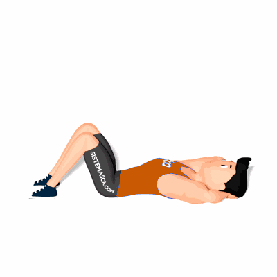

Abdominal Oblíquo Amplitude Máxima

Exercício para fortalecimento e hipertrofia da região abdominal, reto abdominal, oblíquos, com enfoque no oblíquo lateral. Indicado a praticante de musculação nível intermediário e avançado. Auxilia a moldar a região abdominal.
Ficha Técnica
Tipo: Funcional
Grupo Muscular: Abdome
Aparelho: Nenhum
Músculos: Nenhum
Como realizar
- Deite sobre um colchonete;
- Joelhos flexionadas, pés ligeiramente separados para maior estabilidade;
- Mãos entrelaçadas atrás do pescoço, cotovelos abertos;
- Realize o movimento de rotação do corpo, elevando o cotovelo em direção a outra perna, concentre a força na parte lateral dos músculos abdominais;
- Retorne à posição inicial e realize o movimento de rotação novamente, inverso ao anterior.
 RC STORE
RC STORE